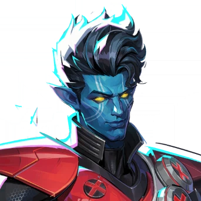

Nightcrawler
Kurt Wagner
StrategistHero File
Kurt Wagner is a German mutant who can teleport in a puff of smoke, along with a few teammates if he needs to. He first appeared in the comics in Giant-Size X-Men #1 in 1975, and he's been a fan favorite ever since.
In Marvel Rivals, he joins as a Strategist, which means his job is keeping his team alive rather than racking up eliminations.
- Role
- Strategist
- Joined
- Season
- 11
- Hero No.
- 55
- Voiced by
- Matt Mercer